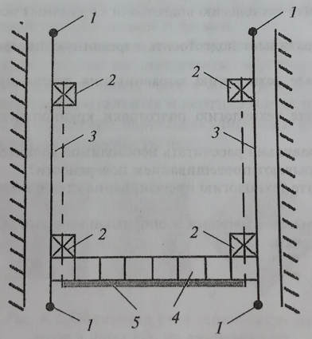

-

8(0152)31-25-61
-

kst@ggkst.by
-

http://ggkst.by
8(0152)31-25-61
kst@ggkst.by
http://ggkst.by
Установка опорных марок и маяков
ОКак уже отмечалось выше, гвозди, выступающие из плоскости стены на толщину облицовки, являются марками – знаками, фиксирующими отдельные точки лицевой поверхности облицовки.
При провешивании поверхностей стен в небольших помещениях устанавливают четыре марки, располагаемые по одной в каждом углу.
Завершив провешивание стен установку марок, приступают к разметке. Складным метром или рулеткой размечают ряды будущей облицовки, определяют количество плиток, укладываемых в ряду. Характерные точки облицовываемой поверхности, например углы, закрепляют опорными маяками – облицовочными плитками, установленными на гипсовом растворе.

Рис. Установка марок и маяков:
1 – опорные маяки (гвозди), 2 – опорные маяки, 3 – шнуры, 4 – нижний ряд плиток, 5- рейка на уровне чистого пола
На протяжённых участках облицовки выкладывают маячные ряды из плиток. Вертикальность установленных опорных маяков и маячных рядов проверяют строительным уровнем.
Если стену выше облицовки будут оштукатуривать, то для правильной установки карнизного (верхнего) ряда плиток требуется, чтобы облицованная панель на 5-10 мм выступала над плоскостью штукатурки.
При провешивании поверхностей и установке маяков используют контрольно-измерительные инструменты и приспособления, позволяющие точно установить необходимое количество марок и маяков.
Отделка облицованной поверхности